ThinkingSense has two front doors on the same gateway: the admin console (/admin) where you connect data and curate meaning, and the Ask app (/) where business users ask questions in plain English. Every screenshot below is from a running build.
The first time ThinkingSense starts with no sign-in configured, it does not run open. It creates an admin account with a random password and prints it once in the log, for example docker logs <container> or kubectl logs deploy/<name>. Only a salted hash is kept, in bootstrap-admin in the data directory, so the password is not shown again. Open /admin, sign in as admin, and set up your own sign-in (OMNIGATE_AUTH_USERS, API tokens or single sign-on); the generated account stops being used as soon as you do. The one-click cloud stacks ask for the admin password while you deploy, so they never use it. For a local trial only, OMNIGATE_INSECURE=true runs without a login, and the console shows a banner for as long as it does.
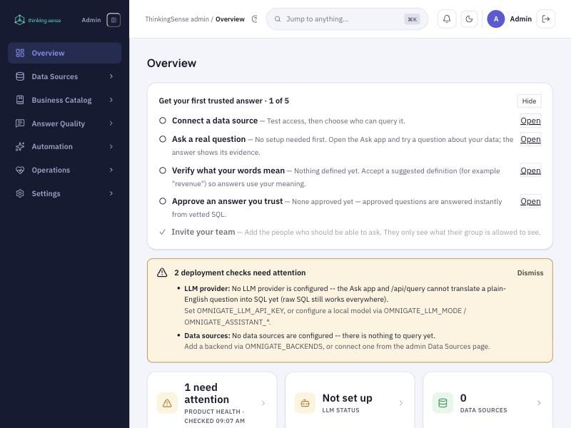
| Area | What it is for |
|---|---|
| Data Sources | Databases, uploads, SaaS apps, MCP servers and documents — what the gateway can reach, and which external tools a question may call. |
| Business Catalog | Terms & ontology, context builder, metrics, rules, column search — what your data means. |
| Answer Quality | Review, question activity, the answer quality loop, trusted questions, signals, Explore and dashboards. |
| Automation | Skills, agent registry, actions and proactive insights. |
| Operations | Health, needs attention, infrastructure, cost & usage, rollups and the audit log. |
| Settings | Models, groups, users & access, security (column tags and the access-policy history), and the API & MCP surfaces. |
External MCP tools are discovered from the servers you configure. Only tools you approve (or that declare themselves read-only) are invoked automatically, and you can deny any tool at any time without a restart.
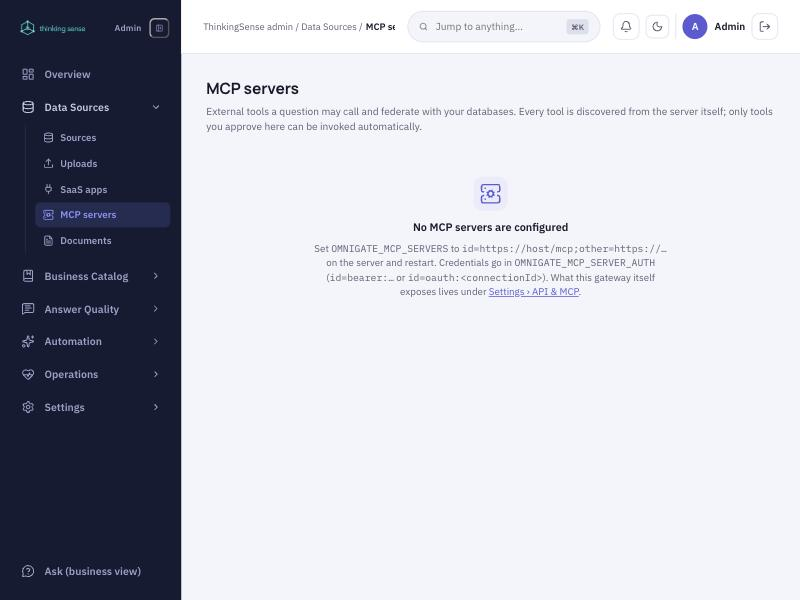
OMNIGATE_MCP_SERVERS.Every question the gateway knows about, grouped by where it stands: asked, flagged by a thumbs-down, under review, approved and trusted, or monitored for drift. It is computed live; approvals still happen on the Question Bank and Insights pages.
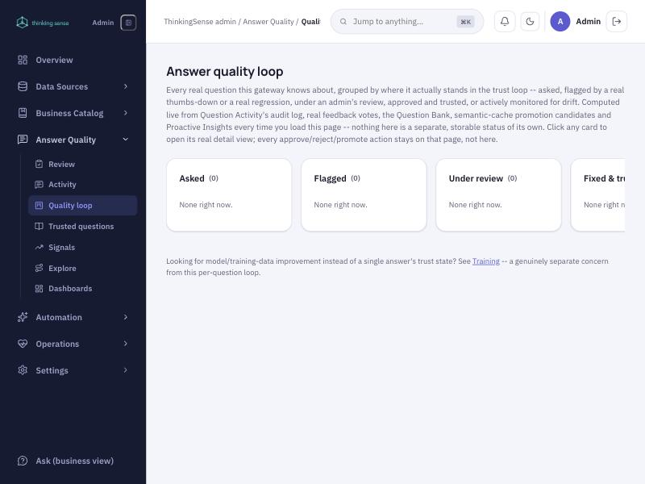
Each question is classified Fast, Agentic or Predictive, and low-confidence SQL escalates to a stronger tier. Escalation thresholds apply immediately; model paths and ports apply on restart. A calibration suite (YAML, against your own backends) checks each tier.
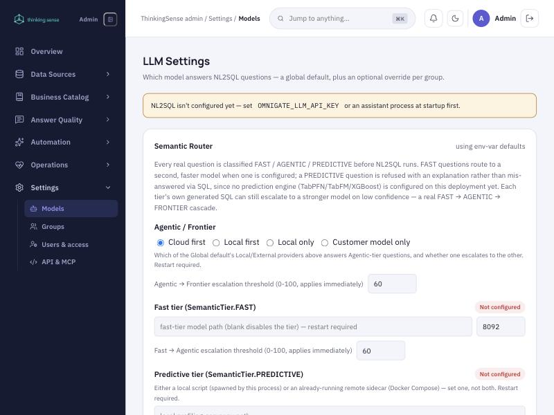
Operations → Infrastructure (app v0.10.10 and later) answers one question on one page: is this deployment healthy, and if not, why? It refreshes every five seconds, is read-only and is for admins only. At the top, a status line reads Healthy, Needs attention or Problem and lists the reasons in plain words, for example “1 of 2 replicas have joined the cluster”, “Pod omnigate-1 is not ready: ErrImagePull (image tag v9.9.9)”, “AI model: key rejected (HTTP 401)”, a licence in its grace period, a certificate close to expiry or a data source that does not answer.
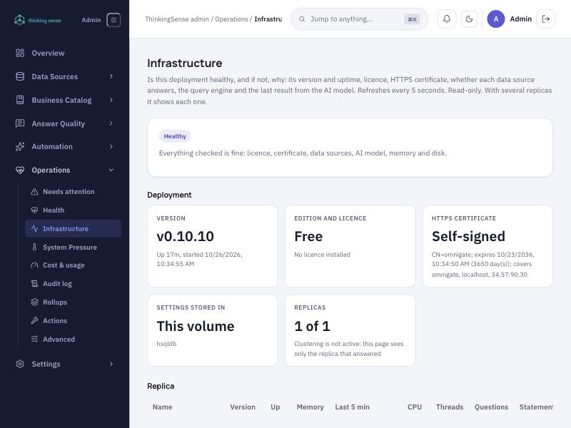
| Section | What it shows |
|---|---|
| Deployment | App version and uptime, edition and licence (with days left), the HTTPS certificate (self-signed or your own, and when it expires), where settings are stored, and replicas joined out of replicas expected. |
| Replicas | One row per replica: version, uptime, memory, CPU, questions in flight, statements per second, free space on its data volume and the last five minutes as a small line. A replica that has joined the cluster but cannot answer is listed with the reason. |
| Data sources | Whether each source is reachable, how fast it answers and how full its connection pool is, from every replica. |
| Query engine | Statements and errors per second, average latency and requests turned away for capacity. |
| AI model | When the model last answered and when and why it last failed, so a rejected API key shows up as exactly that instead of an Ask app that just fails. |
| Recent events | What changed, newest first and merged across replicas: a replica started, joined or left; the licence changed state; the AI model's key was rejected or recovered; the certificate is close to expiry; a data source became unreachable or came back. |
| Kubernetes | What the cluster says about this deployment's own pods: the rollout, each pod with the cluster's own reason when it is not running (an image that cannot be pulled and the tag it tried, an init step, no node with room, a memory kill), which nodes and zones the replicas run on, what a node drain may do (the disruption budget), the data volume, the load balancer address and the warnings of the last hour. |
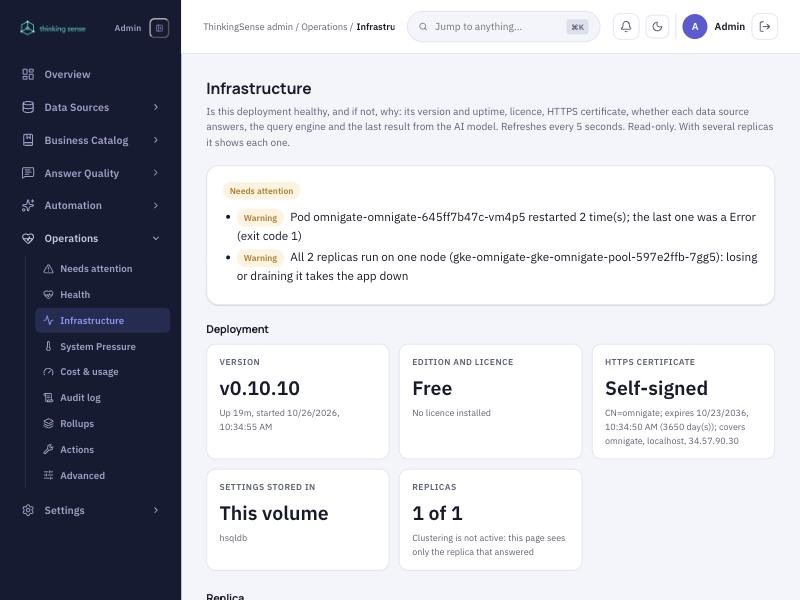
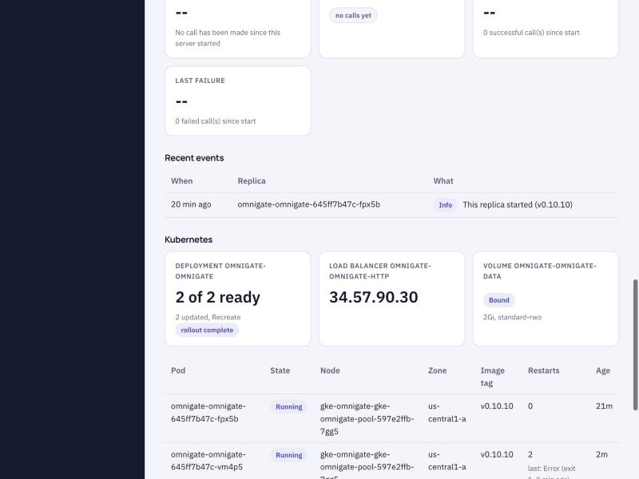
kubectl get pods.observability.kubernetes.enabled=false, or only the node read with observability.kubernetes.nodes=false, in the Helm values. Stack releases before oke-stack-v1.1.16, eks-stack-v1.0.19, aks-stack-v1.0.14 and gke-stack-v1.0.2 do not set this up; the page then works without the Kubernetes section./metrics remain the way to feed those.Admins and business users can both use single sign-on — Microsoft Entra ID, Okta, Auth0, Google Workspace, Keycloak or any standard OIDC provider — alongside local accounts.
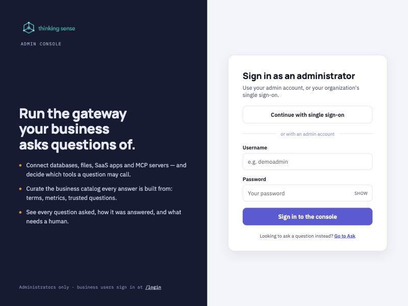
OMNIGATE_AUTH_OIDC_ADMIN_USERS or they are in a group named in OMNIGATE_AUTH_OIDC_ADMIN_GROUPS. Set OMNIGATE_AUTH_OIDC_ALLOWED_GROUPS to keep everyone else out of the console.OMNIGATE_AUTH_OIDC_ISSUER, _CLIENT_ID and _CLIENT_SECRET. Register https://<host>/auth/oidc/callback and https://<host>/app/oidc/callback as redirect URIs. The Ask app can use its own registration via OMNIGATE_APP_OIDC_*.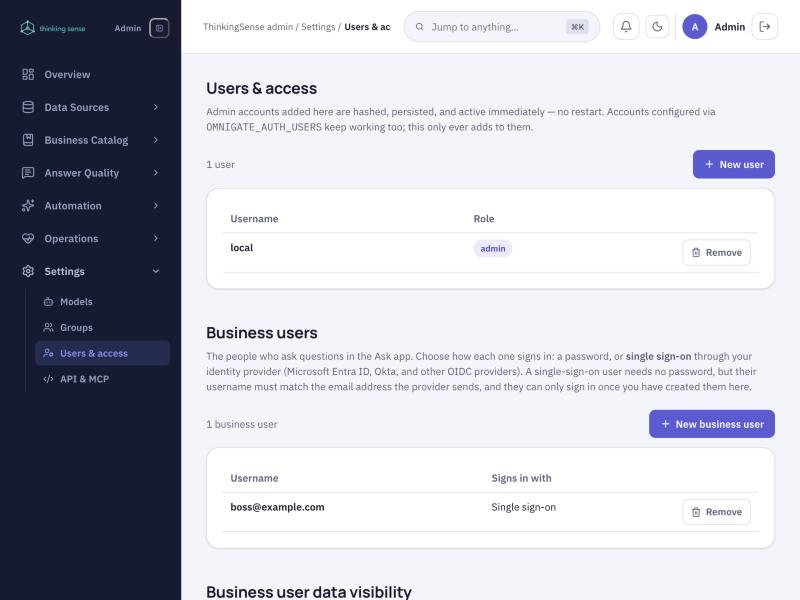
The free image can run as the commercial edition with a signed licence: set OMNIGATE_LICENSE to the token, or mount it at /opt/omnigate/license. It is verified offline and re-checked every minute. An expired or invalid licence never stops the server: it stays on the free edition, and the Overview page and GET /api/config show the customer, the expiry and the reason. Added in 0.10.5.
When admin sign-in is on and no end-user identity provider is configured, /mcp/agent requires an admin API token (Authorization: Bearer ...). Set OMNIGATE_AGENT_MCP_ALLOW_ANONYMOUS=true to restore anonymous access, or OMNIGATE_AGENT_MCP_ENABLED=false to switch the endpoint off. Changed in 0.10.5.
Aggregates over a join are folded in as rows stream past, in memory and in disk-spill mode, so a join of millions of rows no longer holds the joined rows. A plain join stops reading once it has the rows that can be returned. The disk-spill threshold scales with the heap, and the heap guard now also stops a runaway /api/query statement. Set OMNIGATE_PARALLEL_JOIN_STREAM_AGGREGATE=false to restore the previous behaviour. Changed in 0.10.5.
The planner sizes joins from stored statistics, which are now collected by default: every 6 hours it reads each source's own catalog counts, without scanning tables (OMNIGATE_STATS_REFRESH_INTERVAL_MINUTES changes the interval). Filters and column lists reach S3, REST and Iceberg tables. Tables of one source that join each other are joined inside that source. The first time a query needs it, the planner measures each source's link, reading up to 200,000 rows of two columns. It then groups a side of a cross-source aggregate inside its source only when sending the rows would be slower. Signed-in users get the parallel engines with their database session policy applied, so each of their reads opens a fresh database session: plan connection limits for that. Changed in 0.10.24.
A question that joins MCP tools and databases can pick up after a source fails. Set OMNIGATE_FEDERATION_CHECKPOINT_DIR to a private, persistent directory and OMNIGATE_FEDERATION_CHECKPOINT_POLICY_VERSION to your current permissions revision (change it whenever upstream permissions change). Sending the federationRunId from the trace with the same question reuses the inputs that completed. A run that has expired (after one hour by default), belongs to someone else or chose different sources starts afresh. Ask says which input was incomplete rather than answering from part of the data. Changed in 0.10.24.
Before a generated query runs, the engine that will run it checks it: a single-source query is prepared by its own database, and a cross-source query is validated by the federation planner. A rejected query is repaired using facts from the schema: which table actually has a missing column, similar names, and the columns of the tables it uses. Deterministic fixes come first (a column on the wrong table is moved and the join added), then the model, with the last of OMNIGATE_NL2SQL_REPAIR_ATTEMPTS (default 2) going to the cloud model when one is configured behind a local one. Nothing is refused at this step. The trace shows the repaired SQL and a "SQL validation" check. OMNIGATE_NL2SQL_VALIDATE_GATE=false turns it off. Changed in 0.10.25.
In the JSON of /api/query, Ask answers, conversations and embeds, a time-zone-aware value (PostgreSQL timestamptz) read from a single source is written in UTC with its offset, for example 2026-11-20T08:15:00Z. A zone-less timestamp is written as stored, so read it in the zone the data was recorded in. Results across several sources do not carry the offset yet, and the PostgreSQL, MySQL and JDBC wire protocols are unchanged. Changed in 0.10.25.
An in-flight sign-in is carried in a signed browser cookie, so the provider's redirect can return to any replica and no sticky load balancing is needed. Set the same OMNIGATE_OIDC_STATE_SECRET (any long random string) on every replica; without it each replica signs with its own key and a login that returns to a different replica fails. A single node needs no setting. Fixed in 0.10.4.
The groups your provider sends in the ID token (the groups claim, or the claim named by OMNIGATE_APP_OIDC_GROUPS_CLAIM, for example cognito:groups) become the user's roles at sign-in. In Settings → Groups, a workspace can then admit everyone in a provider group with a role rule such as access: { roles: ["Sales-Analysts"] }. Member lists still work, and either is enough. The user must still be created as a single sign-on business user, and role changes in the provider apply the next time they sign in. A session without a Workspace starts in the first one listed in the configuration (from 0.10.25; before, the order could change between restarts).
Register both redirect URIs with the provider: https://<host>/auth/oidc/callback and https://<host>/app/oidc/callback. These were checked against ThinkingSense with a test provider, not live vendor tenants — confirm menu names in the vendor docs.
groups claim (ID token, "Matches regex" .* or a filter for your admin groups).OMNIGATE_AUTH_OIDC_ISSUER=https://your-org.okta.com/oauth2/default
OMNIGATE_AUTH_OIDC_CLIENT_ID=<client id>
OMNIGATE_AUTH_OIDC_CLIENT_SECRET=<client secret>
OMNIGATE_AUTH_OIDC_SCOPES="openid profile email groups"
OMNIGATE_AUTH_OIDC_ADMIN_GROUPS=ThinkingSense-AdminsADMIN_GROUPS. Tenants where users belong to many groups may need "groups assigned to the application" to avoid claim overage.OMNIGATE_AUTH_OIDC_ISSUER=https://login.microsoftonline.com/<tenant-id>/v2.0
OMNIGATE_AUTH_OIDC_CLIENT_ID=<application (client) id>
OMNIGATE_AUTH_OIDC_CLIENT_SECRET=<secret value>
OMNIGATE_AUTH_OIDC_ADMIN_GROUPS=<group object id>AWS IAM Identity Center issues SAML assertions to applications, so put an Amazon Cognito user pool in front: add Identity Center (or your corporate IdP) to the pool as a federated provider, then register ThinkingSense as an app client.
openid email profile.thinkingsense-admins) and add admins; Cognito puts it in the cognito:groups claim.OMNIGATE_AUTH_OIDC_ISSUER=https://cognito-idp.<region>.amazonaws.com/<user-pool-id>
OMNIGATE_AUTH_OIDC_CLIENT_ID=<app client id>
OMNIGATE_AUTH_OIDC_CLIENT_SECRET=<app client secret>
OMNIGATE_AUTH_OIDC_GROUPS_CLAIM=cognito:groups
OMNIGATE_AUTH_OIDC_ADMIN_GROUPS=thinkingsense-adminsFor machine access from AWS workloads, use OMNIGATE_AUTH_API_TOKENS rather than SSO.
OMNIGATE_AUTH_OIDC_ISSUER=https://accounts.google.com
OMNIGATE_AUTH_OIDC_CLIENT_ID=<client id>.apps.googleusercontent.com
OMNIGATE_AUTH_OIDC_CLIENT_SECRET=<client secret>
OMNIGATE_AUTH_OIDC_ADMIN_USERS=alice@example.com,bob@example.comIf you need group-based roles on GCP, use Identity Platform or a Workspace SAML/OIDC bridge that emits a groups claim.
groups scope or claim is enabled for the application.OMNIGATE_AUTH_OIDC_ISSUER=https://idcs-<domain-id>.identity.oraclecloud.com
OMNIGATE_AUTH_OIDC_CLIENT_ID=<client id>
OMNIGATE_AUTH_OIDC_CLIENT_SECRET=<client secret>
OMNIGATE_AUTH_OIDC_ADMIN_USERS=alice@example.comOpen /admin/login: there should be a "Continue with <provider>" button above the local form. If sign-in returns to the login page with an error, check that the issuer matches the provider's issuer value exactly, both redirect URIs are registered, and the client secret is current.
Settings → Security has two parts. Column tags classify columns (pii.email, financial, secret): choose Suggest tags and ThinkingSense proposes tags from column names and sample values; nothing is enforced until you Approve a tag, and you can add one by hand. A policy rule written against a tag (tag: pii) then covers every approved column with that tag, so a newly tagged column is protected without editing the policy. Policy history lists every version of the access policy with its author and reviewer; Review shows what a change alters and whether the tests kept in the policy file pass, and Approve, Reject and Roll back to this do what they say. With OMNIGATE_POLICY_REVIEW=required a second administrator must approve a change. The same page opens with What is actually on: each control as On, Partly or Off with how to turn it on, and for every data source its classification, whether the database receives the end user, and what a model may be sent. An installation is not shown as production ready while a critical control is missing. The Security page describes every control and setting.
Business users ask in plain English and watch each step: sources used, checks run, how sure the answer is. Answers cite the tables and documents they came from, and users only see what their group and attributes allow: a column they may not read is left out, and a masked one shows as ***, a partial value or a band such as $90,000 instead of the exact number.
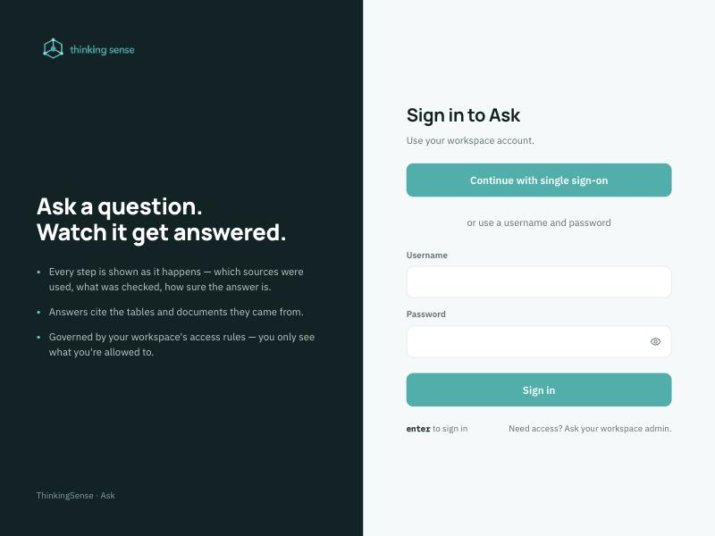
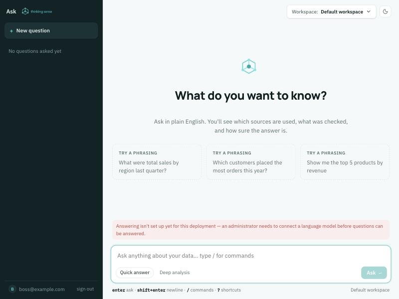